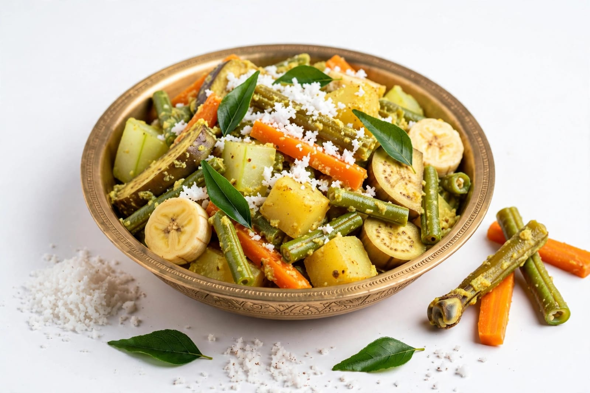

About Vishu
Vishu is an important traditional festival celebrated mainly in Kerala and by Malayali communities in different parts of the world. It marks the beginning of the new year in the traditional Malayalam calendar. Vishu is associated with happiness, prosperity and a fresh beginning. Families celebrate the festival by following traditional customs, visiting temples and preparing special food.
One of the most important customs of Vishu is Vishukkani. It is an auspicious arrangement of items such as flowers, fruits, rice, coins, vegetables, a mirror and a traditional lamp. The arrangement is prepared the night before Vishu so that the first sight seen in the morning is considered auspicious. People wake up early and view the Vishukkani with prayers and happiness.
Another important tradition is Vishukkaineetam, in which elders give money to younger members of the family as a blessing. People wear new clothes, visit temples and spend time with family members. A special feast called Vishu Sadya is also prepared with several traditional dishes. Vishu represents hope, prosperity, happiness and a positive beginning for the coming year.
Special Foods
Vishu Sadya
Vishu Sadya is a traditional festive meal served on a banana leaf.

Payasam
Payasam is a sweet dish commonly prepared during Vishu celebrations.

Avial
Avial is a traditional Kerala vegetable dish prepared with coconut.